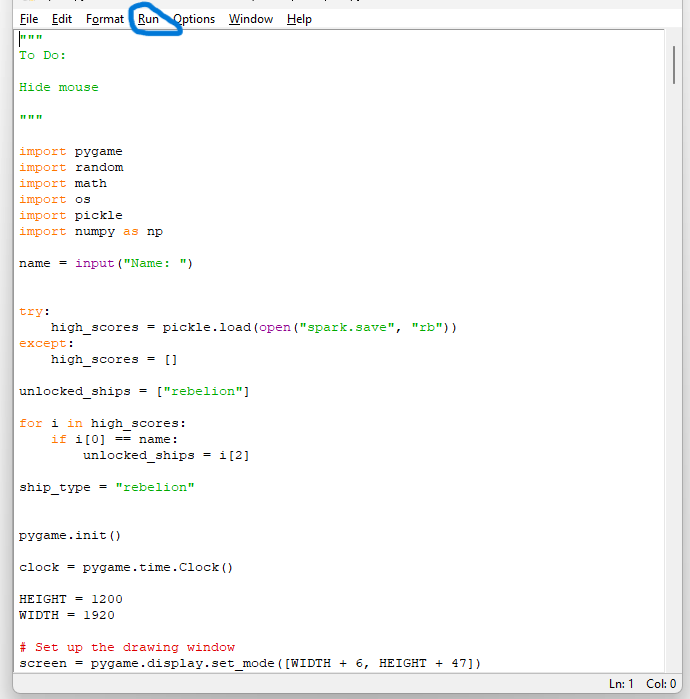

This very nice gravity game was made by Michael Kaszynski
The Controls:Left click to build particles, right to go to the particle, wasd to move super fast, arrow keys to zoom in and out.
To run this game you will have to have python installed here you can find how to do it if you dont know how. How to install python .

then you have to go to the file location and extract it as circled in blue above
then in the terminal or command prompt, type "pip install numpy", and press enter and let it down load next type "pip install pygame" and press enter.
Then all you need to do is open it using python the easiest way to do it is with IDLE the app you get when you install python

In IDLE hit file as circled in blue above

Then just hit open and go to the file location of the file you want to run and then select it
then hit run as circled in blue above

Then hit Run Module and thats it!
gravity2 game made by Michael Kaszynski